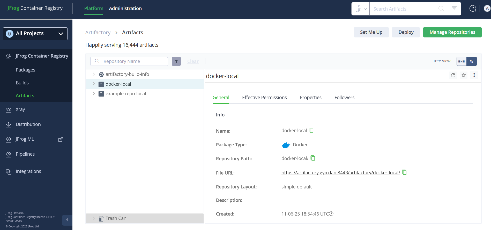

AIOps on Linux Planning
Networking
Can you use an alternative port to 443 for the load balancer?
No. As of May 2025, this does not work and port 443 must be used as the UI port for the load balancer. There are AIOps services within the cluster that will attempt to access cp-console-aiops via port 443.
Non-root Users
The installation of AIOps on Linux requires root (or sudo) and the underlying components run as root on the nodes. However, you can configure your nodes such that a non-root user can do most types of administrative tasks after the installation.
The commands below can be run as root after cluster node up is successful on the control plane (k3s server) nodes to configure a group called k3sadmin that will allow a non-root user called clouduser to run administrative commands.
groupadd k3sadmin
usermod -aG k3sadmin clouduser
chown root:k3sadmin /usr/local/bin/k3s
chmod 750 /usr/local/bin/k3s
chown root:k3sadmin /etc/rancher/
chmod 750 /etc/rancher/
chown -R root:k3sadmin /etc/rancher/k3s/
chmod 750 /etc/rancher/k3s/
chmod 750 /etc/rancher/k3s/config.yaml
chmod 660 /etc/rancher/k3s/k3s.yaml
# for ctr
chown root:k3sadmin /var/lib/rancher/k3s/agent/etc/
chmod 750 /var/lib/rancher/k3s/agent/etc/
# for crictl
chown root:k3sadmin /var/lib/rancher/k3s/agent/etc/crictl.yaml
chmod 640 /var/lib/rancher/k3s/agent/etc/crictl.yaml
# ONLY for online installs, oc is not available for offline installs
# for oc
mkdir -p /home/clouduser/.kube
cp /etc/rancher/k3s/k3s.yaml /home/clouduser/.kube/config
chown -R clouduser:clouduser /home/clouduser/.kubeAfter executing these commands, clouduser will be able to run kubectl, crictl, ctr, aiopsctl, and oc (if online install is used).
❓ Where is oc in my offline install?
The oc binary is downloaded from openshift.com during installation. For an offline install it assumed that access to openshift.com is not present. But don’t worry, you can use kubectl instead. :-)
Offline Installation
Offline installations, also known as air-gapped deployment, is necessary if the target cluster will not have access to the internet.
❗ Security scanning for container images ❗
IBM does internal security scanning of container images but it is very common for enterprises to require their own security scans for container images prior to allowing installation. THIS CAN BE A VERY LENGTHY PROCESS. Cloud Pak for AIOPs publishes over 400 different container images and every enterprise handles this situation differently.
If this is a requirement for your enterprise, get started on this process first as it may quickly become a blocker for the deployment schedule.
❓ Where do I find the list of container images ❓
The container images for Cloud Pak for AIOps can vary depending on release. There is no way to have the aiopsctl command generate list without also attempting to mirror the images. Here is a hack that will kill the process after it generates the proper manifest file but before the mirroring starts (change the --registry parameter value to match your environment):
# run aiopsctl bastion login commands for both icr.io and the target registry first
aiopsctl bastion mirror-images --registry artifactory.gym.lan:8443/docker-local 2>&1 | tee >(
while read line; do
if [[ "$line" == *'Mirroring images to registry'* ]]; then
echo "String found. Killing process..."
pkill -P $$ aiopsctl
exit 0
fi
done
)This will generate a file called images-mapping.txt under ~/.aiopsctl. The directory will differ depending on the release, but for v4.10.1 the location is ~/.aiopsctl/mirror/.ibm-pak/data/mirror/ibm-cp-waiops/1.16.1
Example of images-mapping.txt (only first 4 lines shown):
cp.icr.io/cp/appc/ace-server-prod@sha256:2f9e903bd2cf53ba0878e982ac0f81d956200ffe70a9a57084c2b31bf9134311=artifactory.gym.lan:8443/docker-local/cp/appc/ace-server-prod:13.0.2.2-r2-20250315-121329
cp.icr.io/cp/appc/acecc-content-server-prod@sha256:4a558be37f530acc1c2395187bbe6d896a2f8dca3c2c9977eb66b7e984805abe=artifactory.gym.lan:8443/docker-local/cp/appc/acecc-content-server-prod:13.0.2.2-r2-20250318-034910
cp.icr.io/cp/appc/acecc-couchdb3-prod@sha256:c18d850494ba2ee8a90859430e4cd7ea2e6c342eea750afc816f450520dd42c8=artifactory.gym.lan:8443/docker-local/cp/appc/acecc-couchdb3-prod:13.0.2.2-r2-20250318-020015
cp.icr.io/cp/appc/acecc-dashboard-prod@sha256:ab27d8031bb8ec87a3e465c4e172d9c57cd0b415db78d8305e45f74820949d58=artifactory.gym.lan:8443/docker-local/cp/appc/acecc-dashboard-prod:13.0.2.2-r2-20250325-140612For each line, the section before = is the source container image from IBM container registry.
To list only the source images from the images-mapping.txt file, use the following command:
awk -F= '{print $1}' images-mapping.txt❓ Do I really need all of these container images ❓
Maybe. The container images that make up a release contain back-level images for upgrade purposes. If you are installing AIOps for the first time, you do not need the full set of container images. This is an important detail as security scans might pick up vulnerabilities on container images that are not used in the current version of the product.
For example, AIOps might use kafka v3.8.0 and v3.9.0. However, for upgrade purposes kafka v3.6.1 is also be part of the container image manifest. If a security scan finds vulnerabilities in the kafka v3.6.1 image, those can be safely ignore for a new installation as they won’t be used.
❓ How do I reduce the image manifest ❓
WARNING: Be very careful and only attempt this if you know what are you doing. You risk not including a required container image and the below has only been tested on v4.10.1.
Go to the directoy containing the images-mapping.txt file generated from the bastion mirror-images command. The following command will create a new file called images-mapping-filtered.txt with most of the back-level container images removed.
awk 'NR==FNR {split($0, a, "@"); split($0, b, ":"); if (b[length(b)] ~ /^v?[0-9]+\.[0-9]+\.[0-9]+.*$/) versioned_images[a[1]]++; next} {split($0, a, "@"); split($0, b, ":"); if (!(a[1] in versioned_images && b[length(b)] !~ /^v?[0-9]+\.[0-9]+\.[0-9]+.*$/)) print}' images-mapping.txt images-mapping.txt > images-mapping-filtered.txtThere are a few different container types that need to be handled differently (redis, kafka). Run the command below to handle those.
awk '
NR==FNR {
if ($0 ~ /ibm-redis-cp-haproxy@/) {
split($0, b, ":");
version = b[length(b)];
if (version > max_redis_haproxy_version) max_redis_haproxy_version = version;
} else if ($0 ~ /ibm-redis-cp-7.2.7@/) {
split($0, b, ":");
version = b[length(b)];
if (version > max_redis_version) max_redis_version = version;
} else if ($0 ~ /ibm-events-kafka-[0-9]+\.[0-9]+\.[0-9]+@/) {
match($0, /ibm-events-kafka-([0-9]+\.[0-9]+\.[0-9]+)@/, m);
if (m[1] > max1_kafka_version) {
max2_kafka_version = max1_kafka_version; max1_kafka_version = m[1];
} else if (m[1] > max2_kafka_version) {
max2_kafka_version = m[1];
}
} else {
split($0, a, "@");
split($0, b, ":");
if (b[length(b)] ~ /^v?[0-9]+\.[0-9]+\.[0-9]+.*$/) {
versioned_images[a[1]]++;
}
}
next;
}
{
if ($0 ~ /ibm-redis-cp-haproxy@/) {
split($0, b, ":");
version = b[length(b)];
if (version == max_redis_haproxy_version) print;
} else if ($0 ~ /ibm-redis-cp-7.2.7@/) {
split($0, b, ":");
version = b[length(b)];
if (version == max_redis_version) print;
} else if ($0 ~ /ibm-events-kafka-[0-9]+\.[0-9]+\.[0-9]+@/) {
match($0, /ibm-events-kafka-([0-9]+\.[0-9]+\.[0-9]+)@/, m);
if (m[1] == max1_kafka_version || m[1] == max2_kafka_version) print;
} else {
split($0, a, "@");
split($0, b, ":");
if (!(a[1] in versioned_images && b[length(b)] !~ /^v?[0-9]+\.[0-9]+\.[0-9]+.*$/)) {
print;
}
}
}
' images-mapping-filtered.txt images-mapping-filtered.txt > images-mapping-filtered.tmp && mv images-mapping-filtered.tmp images-mapping-filtered.txtYou now have images-mapping-filtered.txt that should be a significantly reduced set of images that will still work for a new installation.
❓ How do I mirror my reduced images set ❓
When aiops bastion mirror-images runs it creates a set of files that do the mirroring under the covers. Those files are in .aiopsctl/mirror.
Go to .aiopsctl/mirror and look at oc_image_mirror.sh.
#!/bin/sh
set -e
set -o noglob
# Usage
# ENV_VAR=... ./oc_image_mirror.sh <Path to oc binary>
#
# Environment variables:
# - REGISTRY_AUTH_FILE
# Your registry authentication file. For Podman, this
# is typically `${XDG_RUNTIME_DIR}/containers/auth.json`.
# - IMAGES_MAPPING_FILE
# Your images-mapping.txt to use as the source for mirroring.
# - DRY_RUN
# Set to true to complete a dry-run mirror.
#
$1 image mirror \
-f "${IMAGES_MAPPING_FILE}" \
-a "${REGISTRY_AUTH_FILE}" \
--insecure \
--filter-by-os '.*' \
--skip-multiple-scopes \
--max-per-registry=1 \
--dry-run="${DRY_RUN}"Tip: If you want to speed up the mirroring, you can edit this file and change the --max-per-registry=1 to --max-per-registry=6. This will run 6 threads during the mirroring process.
To run the mirroring with our reduced images set images-mapping-filtered.txt, run the following command (use the proper path to your file if different).
# change the path to your file if different
IMAGES_MAPPING_FILE=./.ibm-pak/data/mirror/ibm-cp-waiops/1.16.1/images-mapping-filtered.txt REGISTRY_AUTH_FILE=./containers/auth.json DRY_RUN=false nohup ./oc_image_mirror.sh ./oc >nohup.out 2>&1 </dev/null &While the job is calculating the images to mirror, there will be no output for up to 10 minutes, but then you should see messages showing the mirroring progress in nohup.out. A fully reduced v4.10.1 container set with 6 threads should complete in less than 30 minutes.
Artifactory
If planning for an offline installation using Artifactory as the target registry, ensure that Artifactory meets the requirements for AIOps.
- The target repository layout must be set to Docker
- Docker V2 API must be enabled on the repository
🧪 Docker repository validation
Log in to the Artifactory UI and navigate to the target repository. There will be a type listed for the repository. That type should be Docker.

🧪 Docker V2 API validation
Test if the Docker v2 API is enabled by running:
curl -u <username>:<password> https://<your-artifactory-domain>/artifactory/<repo-name>/v2/- If it returns a
200 OKor401 Unauthorized, the v2 API is enabled. - If it returns
404 Not Found, the repo may not support Docker v2.
✅ Artifactory URL Format
When configuring your container image mirroring to Artifactory, follow these guidelines carefully to ensure compatibility and avoid common pitfalls.
When specifying the Artifactory URL during the mirroring process:
- ❌ Do not include
https://at the beginning. - ✅ Do append
:443to the hostname. - ❌ Do not include
/artifactory/in the path like the file URL might display in the Artifactory UI. This is for file downloads only. - ✅ Use the format:
<artifactory-host>:443/<repo>/<path-to-images>
For example, if your Artifactory host is my-artifactory.company.com and your repository is internal-repo, the correct URL might be: my-artifactory.company.com:443/internal-repo/aiops
🖥️ Platform Requirements
Ensure that you are running on RHEL 8 or RHEL 9 from the bastion host used to run the mirroring, as the oc version bundled with aiopsctl is compatible with RHEL 8 & 9.
You can verify your OS version with:
cat /etc/redhat-releaseAnd check your oc version with:
oc version